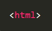
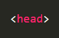
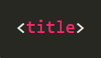
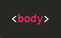
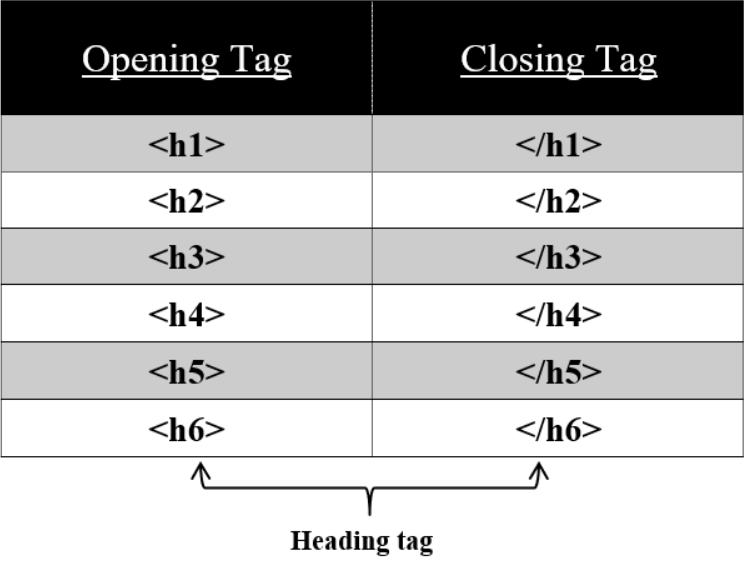
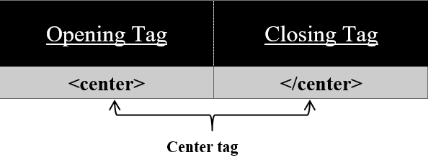
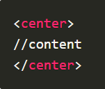

HTML TAGS
What is an HTML Tag?
- < html > tag has its closing < /html > tag
- < head > tag has its closing < /head > tag
- < title > tag has its closing < /title > tag
- < body > tag has its closing < /body > tag
- < br /> tag
- < hr /> tag
- < img > tag
If you want to build a beautiful website. Tags will help you to do so.
A tag is like a container for either content or other HTML tags. Tags are words enclosed within < and > braces.
Some of the tags are mentioned below,
   
These are also known as “Starting tags” or “Opening tags”.
The following tags end with a closing tag i.e.
Closing tags are used to close the content in between them. These are the tags enclosed within angle braces <,> and a forward slash /.
For example: < /html >. These closing tags are also known as “Ending tags”.
Some tags don’t have their corresponding closing tags and these are known as “Stand-Alone tags” / “Empty tags” / “Self-closing tags”.
For example:
NOTE:
In these Empty tags, they have a space between the characters and the forward-slash (/). This is because if you omit this space, older browsers will have trouble rendering that line break.Heading Tags :
For any headlines use these heading tags on your HTML page.

< h1 > tag: “define heading of an HTML page but with first level”
< h2 > tag: “define heading of an HTML page but with second level”
< h3 > tag: “define heading of an HTML page but with third level”
< h4 > tag: “define heading of an HTML page but with fourth level”
< h5 > tag: “define heading of an HTML page but with fifth level”
< h6 > tag: “define heading of an HTML page but with sixth level”
Center Tag :
To put content in the center use < center > tag on your HTML page.

< center > tag: “used to put content in the center on an HTML page”
Syntax:

The < center > tag is used to put your content in the center of your HTML page. You can use this tag in your table also. Sometimes we need our text to be in the center for that this < center > tag is used. This tag has both an opening and a closing tag. It is not an empty tag.